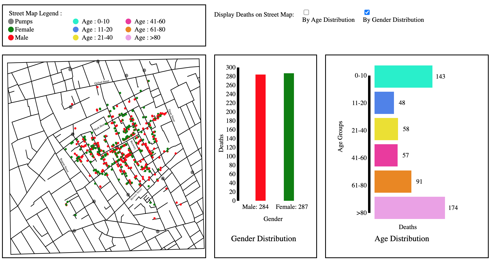

Background :
Dr. John Snow's map of London's 1854 cholera epidemic was a true master piece. It was the first time that anyone had established a link between contaminated water and cholera. The visualization provided compelling evidence and made the case for public health policies to improve water sanitation. The map remains one of the most remarkable and insightful visualizations ever created.
In this project, Dr. John Snow's map was created using D3. In addition to recreating the original map in an interactive version, additional supportive charts are provided. Datapoints on map show locations of the victims accumulating since beginning of the epidemic. Dataset provided was modified and reflected randomized sex and age of the victims based on data from the Naples cholera outbreak in 1884.
Design :
Visualizations created as part of this project are simple, since majority of the time invested in this project went towards learning new language (JavaScript) and new framework (D3). In terms of design, on top of the page there is a navigation bar which indicates which page user is currently viewing since accent color of the selected page changes. Then you have a SVG indicating legend for Street Map. On the right side of the legend you have checkbox in order to display deaths by either age or gender on street map. Below legend you have three different visualizations again created using SVG, first is street map displaying key streets names, work house and victims. Second, is gender distribution graph displaying what number of male and female victim and third is age distribution graph indicating victims based on different age categories. For gender distribution graph data is represented using red and green color of male and female respectively. For age distribution graph a swatch of 6 different colors. All color patterns were selected using adobe color wheel, taking into consideration any visual impairments such as color blindness. Finally below street map you have timeline graph indicating deaths per day, you can select any specific date on map and all victims until that date would be represented on map, gender distribution and age distribution graphs.
Rationale / Constraints :
In terms of layout decisions, on top legend was indicated because it gives a good idea about what data is represented on street map before exploring the street map. Additionally checkboxes gives you an option of what data you want to view on the street map. Along side map you have both gender distribution and age distribution of victims, because from map one can discern pattern of victims, hotspot areas and how disease would have probably spread, but one cannot quantify actual numbers so it made sense to represent age and gender distributions alongside the street map. When it comes to timeline graph in my opinion it makes sense to just display it on a wider canvas and based on selection you can see all three visualizations above it change its data. Ideally I wanted to have a drop down menu to select amongst age distribution, gender distribution and timeline graph alongside street map. So user is not thrown to too many visualizations at once to discern any information but due to limited amount of time current design was finalized.
Discoveries by Visualisation :
In terms of data discovery, layout makes it quite straightforward to understand multiple datapoints in one go, from map you can see patterns, hotspot areas etc, from distribution graphs you can explore demographics which had huge impact of this disease 